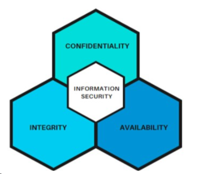
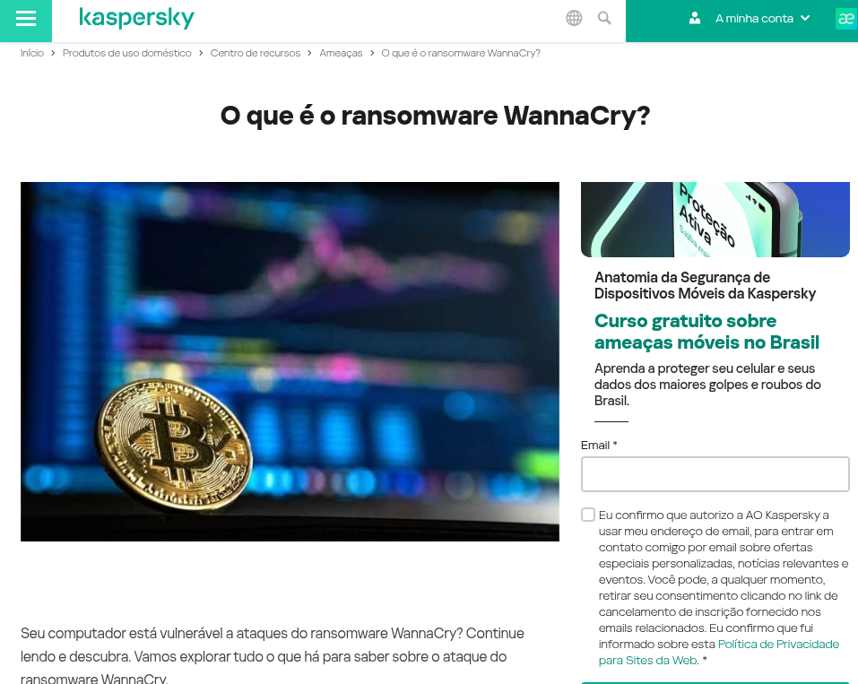

Nos anos 1950-60, os computadores eram máquinas enormes e isoladas. Como não havia redes, a troca de dados exigia o transporte físico de mídias como fitas magnéticas ou cartões perfurados. Esse processo era ineficiente pois:
As primeiras redes de computadores surgiram para resolver esse problema, permitindo a comunicação direta entre máquinas distantes, sem depender de dispositivos físicos.
Quando a mobilidade de dados tornou requisito para a comunicação entre centro de pesquisas, empresas e o governos Surgiram agências ou provedores de serviços de rede (como a Telenet nos EUA, nos anos 1970) para intermediar o tráfego. Essas agências ofereciam infraestrutura dedicada para que as organizações compartilhassem informações sem precisar construir suas próprias redes.
A internet surgiu em 1969 com a ARPANET (Advanced Research Projects Agency Network), rede financiada pelo Departamento de Defesa dos EUA (DARPA) para conectar institutos militares com e centros de pesquisas. Seu objetivo era compartilhar recursos computacionais e informações para garantir comunicação mesmo em cenários de guerra (como um ataque nuclear). E então foram surgindo padrões de comunicação.
Essa nova era da rede colocou em risco os dados privados e sigilosos de entidades que agora precisavam trafegar entre computadores de terceiros ou nós(roteadores). Então surgiram os Hackers que tinham o objetivo de interferir nas comunicações entre computadores sem permissão de maneira maliciosa. Para resolver problemas de segurança surgiram protocolos abertos, políticas de redes para manter o tráfego seguro e os dados começaram a serem criptografados.
"Segurança da informação (InfoSec) é a proteção de informações importantes contra acesso não autorizado, divulgação, uso, alteração ou interrupção. Ajuda a garantir que os dados organizacionais confidenciais estejam disponíveis para usuários autorizados, permaneçam confidenciais e mantenham sua integridade." (IBM,2024)
Segurança da informação: é um campo amplo que envolve a proteção de todos os tipos de dados, independentemente do formato ou do meio em que são armazenados ou transmitidos. (Sans)
Cybersecurity: um ramo da segurança da informação focada em proteger ativos digitais e ambientes conectado, como redes, sistemas, aplicativos e plataformas em nuvem, de ameaças cibernéticas.(Sans)
Quais são os princípios que definem se uma rede está segura ou não?
Os Principais pilares são conhecidas como Tríade (CID)
Consiste na garantia de que o acesso a informações seja revelada apenas para aos usuários, entidades ou processos autorizadas.
O caso envolvendo a Cambridge Analytica (CA) e o Facebook revelou uma grave violação de confidencialidade, onde a engenharia social - técnica que manipula pessoas para obter informações confidenciais - desempenhou papel central. Mesmo sem um ataque cibernético tradicional, a CA coletou dados de 87 milhões de usuários através de um app aparentemente inofensivo ("This Is Your Digital Life"), que explorou falhas na API do Facebook para acessar informações não apenas de quem o instalou, mas também de seus amigos – tudo sem consentimento adequado.
O caso mostrou que a segurança da informação vai além de firewalls e criptografia – envolve ética, governança de dados e proteção contra exploração de vulnerabilidades humanas e sistêmicas.
🔗 G1 - Escândalo Facebook e Cambridge Analytica (2018)Engenharia Social é uma técnica de manipulação psicológica que explora a confiança, curiosidade ou autoridade das pessoas para obter informações sensíveis ou acesso a sistemas, sem usar métodos técnicos avançados.
Garantia de que as informações não foram alteradas de forma indevida por partes não autorizadas, ou de acidentalmente. A integridade assegura que qualquer modificação, seja acidental ou maliciosa, possa ser detectada.
O ataque à Equifax resultou em uma violação de confidencialidade devido ao vazamento de dados sensíveis (como CPFs/SSNs, endereços e números de cartões). Além disso, houve uma quebra de integridade, pois essas informações podem ter sido alteradas por agentes não autorizados durante o vazamento. Como consequência, não há garantia de que os dados permaneceram precisos e inalterados, gerando riscos de fraudes e erros nos registros financeiros das vítimas.
🔗 G1 - Equifax sofre ataque hacker (2017)A crise do Boeing 737 MAX, especialmente com a admissão da empresa em maio de 2019 de que o simulador de voo apresentava defeitos no software, é um exemplo real e trágico de como a quebra de integridade dos dados pode ter consequências fatais.
Na segurança da informação, a integridade garante que os dados não sejam alterados de forma não autorizada ou incorreta. No caso do 737 MAX, os simuladores — usados para treinar pilotos — continham dados incorretos sobre o comportamento do avião em situações críticas. Isso significa que os pilotos treinavam com informações falsas ou incompletas sobre como a aeronave reagiria. Quando situações reais ocorreram, como as falhas no sistema MCAS (um software automático que controlava o nariz do avião), os pilotos não estavam preparados para reagir de forma adequada — porque os dados em que confiaram eram falhos.
Isso mostra que uma falha na segurança da informação, nesse caso, na integridade dos dados de software e simulação, pode ter contribuído diretamente para os dois acidentes fatais que causaram a morte de 346 pessoas.
Portanto, segurança da informação não é só sobre 'hackers': é sobre garantir que sistemas críticos — como os de aeronaves — tenham dados confiáveis, íntegros e testados rigorosamente. Um erro nesses sistemas pode custar vidas.
🔗 Passageiros recusam voos de Boeing 737 MaxA autenticidade é um dos pilares da segurança da informação focado em assegurar que a informação foi produzida, expedida, modificada ou destruída por uma determinada pessoa física, equipamento, sistema, órgão ou entidade(LNCC,2024);
As Fake News são quebras de autenticidade pois imitam fontes confiáveis, alteram detalhes das informações que fingem serem verdadeiras e enganam quem está acessando o conteúdo, seja máquina ou usuário comum. Um exemplo evidente de disseminação de informações falsas foi a pandemia.
🔗 Acesse o Dashboard Interativo do Ministério da Saúde - COVID-19
Durante a pandemia do COVID-19, o aumento drástico na taxa de mortalidade foi um dos sinais mais evidentes de que algo grave estava acontecendo. O impacto do vírus era visível pela taxa de mortalidade elevada, sistemas de saúde colapsando e medidas emergenciais globais denso tomadas.
No entanto, uma parcela considerável da população se opôs à gravidade da situação. Isso aconteceu principalmente devido à disseminação de informações forjadas, manipuladas ou distorcidas nas mídias e redes sociais — um fenômeno conhecido como desinformação.
Esse cenário mostra como a quebra do princípio de autenticidade da informação pode comprometer a resposta da sociedade diante de uma ameaça real. A ausência de mecanismos de verificação, somada ao efeito viral das redes, permitiu que fake news superassem os dados científicos, influenciando decisões críticas e colocando vidas em risco.
🔗 Acesse o Dashboard Interativo do Ministério da Saúde - COVID-19
Observação: Na segurança ofensiva a falsificação ou disfarce de identidade para enganar um sistema ou uma pessoa é conhecida como Spoofing de Informações
A disponibilidade visa garantir acesso contínuo aos dados ou sistemas. Nesse caso o sistema deve assegurar a disponibilidade das informações quando necessário, garantindo que os recursos estejam acessíveis e sob demanda por entidades autorizadas, sem impedimentos indevidos. Para isso deve manter um hardware e software em funcionamento correto e fornecer largura de banda adequada.(FreeCodeCamp, 2020)
O WannaCry foi um ataque de ransomware que se espalhou globalmente em maio de 2017, afetando mais de 200 mil computadores em cerca de 150 países. Ele explorou uma vulnerabilidade do Windows para criptografar os arquivos dos sistemas infectados e exigia um pagamento em Bitcoin para liberá-los.
Nesse caso, houve uma quebra direta da disponibilidade, pois os arquivos e sistemas ficaram inacessíveis para os usuários. Organizações inteiras, como hospitais no Reino Unido, tiveram que suspender atendimentos, redirecionar pacientes e cancelar cirurgias. Empresas de logística, universidades e até serviços governamentais também ficaram fora do ar.
A disponibilidade significa garantir que os sistemas e dados estejam acessíveis quando necessário. O WannaCry impediu isso ao tornar os dados indisponíveis até que o resgate fosse pago — e mesmo assim, sem garantia de recuperação.
🔗 O que é o ransomware WannaCry?
Observação: O ransomware tem como principal finalidade bloquear o acesso aos dados dos verdadeiros donos, tornando as informações inacessíveis até que um resgate seja pago. A quebra da disponibilidade ocorre pois o sistema ou os dados não estão mais disponíveis para quem tem o direito legítimo de usá-los.
Alinhamento com normas internacionais e padrões reconhecidos e obtenção de certificações para garantir conformidade e segurança.
Treinamentos contínuos e simulações de ataques (phishing) para fortalecer a conscientização e resiliência de colaboradores.
a utilização segura e sustentável das redes e serviços de telecomunicações;
identificação, proteção, diagnóstico, resposta e recuperação de incidentes de segurança cibernética.
cooperação entre os diversos agentes envolvidos com fins de mitigação dos riscos cibernéticos.
respeito e promoção dos direitos humanos e das garantias fundamentais, em especial a liberdade de expressão, a proteção de dados pessoais, a proteção da privacidade e o acesso à informação do usuário dos serviços de telecomunicações;
Incentivo à adoção de conceitos de security by design e privacy by design no desenvolvimento e aquisição de produtos e serviços no setor de telecomunicações.
A OWASP é uma comunidade open source e sem fins lucrativos de desenvolvedores, pesquisadores e evangelistas dedicada a melhorar a segurança de aplicações web, aplicativos, API, nuvem e IoT através de ferramentas, códigos, documentação e padrões abertos.
A OWASP (Open Worldwide Application Security Project) é uma comunidade open source dedicada a melhorar a segurança de aplicações web, APIs, nuvem e IoT, promovendo ferramentas e boas práticas. O OWASP Top 10 identifica as 10 vulnerabilidades mais críticas em aplicações modernas.
Descrição: FMecanismos de autorização falhos que permitem que usuários acessem dados ou funcionalidades indevidos além do permitido.
Aplicação prática: Um usuário comum acessando rota de administrador (ex: /admin) sem verificação de privilégio.
Descrição: Exposição no uso de dados sensíveis que estão deixando de serem criptografados.
Aplicação prática: Enviar senha em texto puro via HTTP ou armazenar CPF sem criptografia no banco.
Descrição: Inserção de comandos maliciosos nos sistemas através de SQL Injection, NoSQL Injection, Command Injection, XSS.
Aplicação prática: Campo de busca que aceita comandos SQL, como: ' OR '1'='1.
Descrição: Vulnerabilidades intrínsecas à arquiteturas/design do software, sem considerar os riscos de cada módulo.
Aplicação prática: API sem controle de tentativas de login, permitindo ataques de força bruta.
Descrição: Configurações incorretas ou não protegidas.
Aplicação prática: Deploy com painel de administração acessível publicamente.
Descrição: Uso de bibliotecas, dependências ou plugins desatualizados e com falhas conhecidas.
Aplicação prática: Aplicação rodando com versão antiga do jQuery com falhas XSS conhecidas.
Descrição: Falhas nos mecanismos de autenticação, como ausência de limitação de tentativas ou senhas fracas.
Aplicação prática: Sistema que permite infinitas tentativas de senha sem bloqueio de IP.
Descrição: Uso de código ou dados sem verificação de integridade ou sem assinatura digital.
Aplicação prática: Atualizações de sistema via FTP sem checagem de hash ou assinatura.
Descrição: ausêcia de logs e alertas dificultando a detecção de ataques, e a não conformidade com as regulamentações de segurança(GDPR, LGPD); .
Aplicação prática: Sistema que não registra tentativas de login mal-sucedidas.
Descrição: O servidor é enganado para realizar requisições a destino internos ou externos maliciosos.
Aplicação prática: Upload de URL que permite acesso a http://localhost:8000/admin.